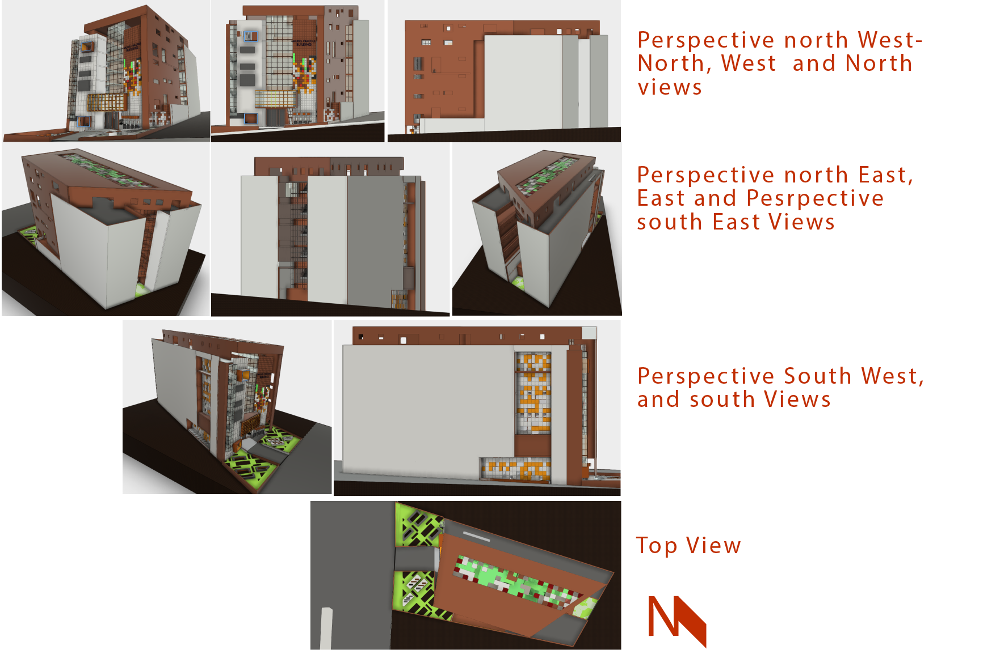

To render the Youth Employment Project for Somalia (YEPS) project with introductory self-preparation instruction materials and personal hands on practice on Computer aided design through the software AutoCAD. The course addresses mid-level career engineers such as ( 1) Engineers working at the ministry in charge of the public works and construction, (2) Engineers from private construction companies, and (3) Professors of University professors. It encompasses the application of the software in various professionals of the built environment, such us planning (Urban), construction and design (Architectural, interior, sanitary and electrical and landscape). The course incorporates the application and pedagogy of CAD specifically AutoCAD.
To render the Youth Employment Project for Somalia (YEPS) project with introductory self-preparation instruction materials and personal hands on practice on Computer aided design through the software AutoCAD. The course addresses mid level career engineers such as ( 1) Engineers working at the ministry in charge of the public works and construction, (2) Engineers from private construction companies, and (3) Professors of University professors. It encompasses the application of the software in various professionals of the built environment, such us planning (Urban), construction and design (Architectural, interior, sanitary and electrical and landscape). The course incorporates the application and pedagogy of CAD specifically AutoCAD.
There will be (1) introductory self-study section which is to be conducted remotely and to be addressed by studying a prepared
lecture (PowerPoint and a video tutorial). This section shall have only one online question and answer session.
(2) An in person practice of AutoCAD. During the in person practice that comes after the remote
course addresses the students with hands on laboratory demonstrations, practices and assignments.
Their final project with regards to preparation of documents should include the step by step creation of the
building indicated schematically in 3D and 2D that is shown below (further technical measurement will be provided for
the students at the time of project implementation. There should also be further 3D visualization of the project during the in
person practice for the students so they can get further understanding of the project before they embark on creating the detailed
2D documents of the project ):

The above image: Different views of the final project in as schematic information.
Students will basically be provided with schematic information about the project. As most details are to be interpreted by the students both individually and in groups, they shall come up with the final detailed 2D project accordingly.
AutDesk Fusion 360: Students may access the project schematic model through the internet for further visualization for the above embed frame.
In the spirit of the fact that students will be passing over their experience to others in the future, while participating on this course they should reflect on their experience while working on the chapter that deals with pedagogy of CAD.
Autodesk recognizes the advantages of third party developers and other contributes in such as researchers and students of the built environment. Such cases can be seen in the EiABC’s research named Ethioplugin (EP), Lecture where Autodesk Revit architecture, AutoCAD and other software are used to document and transform Ethiopian local attributes and are made available for the built environment and the cad industry professionals’ community. As such users of Community and Commercial CAD software should look in to the opportunity. Similarly this course shall constitute the active consideration of contribution in such regard through the process of teaching and learning.
In the notion that it is important to interpret and integrate the usage and implementation of the CAD industry products for education, design, planning and in general the development of the built environment to local cultures, skill and environments.
The course, covers topics such as: AutoCAD, Autodesk and the computer Aided Design industry, Introductory Discussion on AutoCAD and Preparation for Projects, Professional Application of AutoCAD and Pedagogy of CAD. The strategy of the course and the topics mentioned and how they are dealt with should be an indication for the students to consider it for their understanding while working on the demonstrations, exercises and assignments of this curse. This is to mean that the compilation, details and general topics covered and delivery of the course shall lend itself to the objective of the course partially.
Figure: Parametric models of Ethiopian attributes in different modules,
EP research, EiABC. Source: Ethioplugin (EP),
Lecture
Students shall work on demonstrations, exercises, assignments before they would work on their final project. These demonstrations, exercises and assignments should consider their individual student's background and interest, as architecture, urban planning, etc.